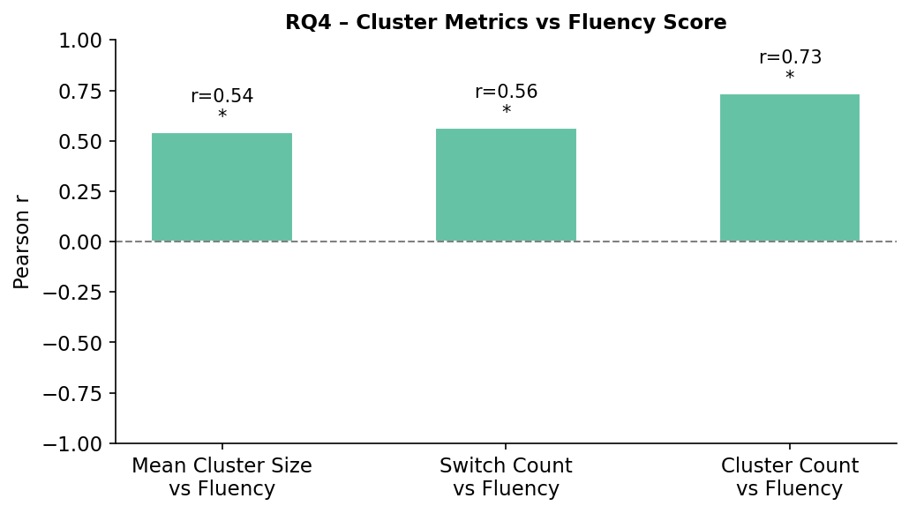

32 Male, 3 Female · Age M=23.1 yrs (SD=1.9) · Education M=16.5 yrs (SD=1.7) · 14 Indian states (Gujarat 7, MP 6, Bihar 5, Maharashtra 4 …). Convenience sample; IIIT Hyderabad.

Right-skewed distribution confirms within-cluster (fast) vs between-cluster (slow) retrieval regimes.

Positive slope = lexical exhaustion. Each point is one word per participant. OLS trend per domain; Pearson r confirms effect.

Five-number summary per domain. Colours: tightest IQR, fewest outliers. Animals & Foods: widest spread and pronounced upper outliers (cluster-switch pauses).

Mean > Median in every domain confirms right-skew. Colours is fastest; Body-parts slowest. Error bars = ±1 SE.

Mean cluster size > 1 confirms non-random clustering. Foods domain has largest clusters; colours smallest.

Positive r: larger mean cluster size predicts higher total Hindi words. Confirms clustering-and-switching model at individual level.

Between-cluster IRT ≈ 1.7× within-cluster IRT. Welch’s t, p < 0.001, Cohen’s d = 1.51. Clustering-and-switching model confirmed.

Both mean cluster size and total switch count show positive Pearson r with total fluency. High-fluency participants exploit clusters deeply and switch efficiently.
Block structure confirms sub-categories are real. Darker = more similar. Low-distance word pairs are retrieved consecutively in VFT.
Between-cluster IRT ≈ 1.7x within-cluster IRT. Welch's t, p<0.05.
Animals & foods: richest vocab, widest SpAM spread. Colours: closed vocabulary, minimal variance.
Positive slope — later-position words take longer. Pearson r significant across all domains.